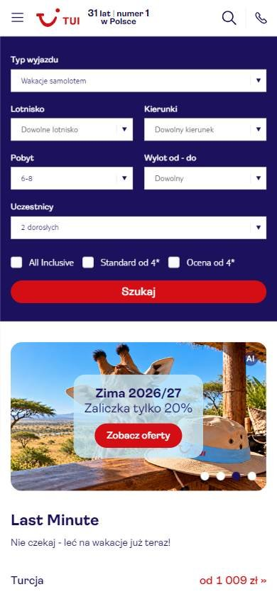
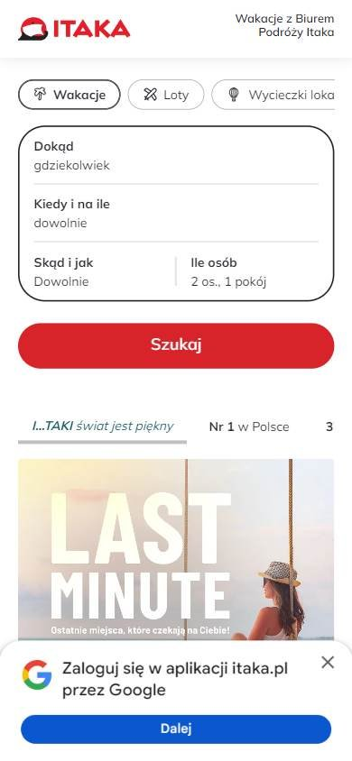
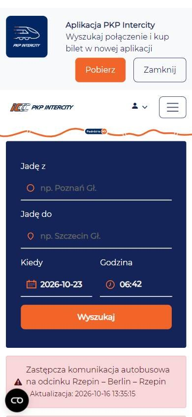

Turismo y reservas
Los seleccionados
Los tres sitios más visitados de Polonia, según estadísticas de tráfico.
En resumen: lo que hacen los líderes
La pantalla de inicio de cada uno



Estilo visual
Colores, imágenes, tipografía y cuánta información muestran.
Tu estilo visual debería…
- Buscador en bloque oscuro y botón en rojo o naranja.
Lo que tienen en común: Bloques de color oscuro para el buscador y botones rojos o naranjas que contrastan.
La paleta de cada uno
Medida sobre la primera pantalla. Los colores de marca salen del header; el resto muestra cuánto espacio ocupa cada color.
Así lo resuelve cada uno
Ficha comparativa
| Aspecto | TUI Polonia | Itaka | PKP Intercity |
|---|---|---|---|
| Paleta | Acotada: azul oscuro + rojo | Acotada: rojo + beige | Acotada: azul oscuro + naranja |
| Imágenes | Fotos medianas de destinos | Ilustración de palmera + foto grande | Pocas imágenes |
| Densidad | Media | Baja | Media |
| Botones | Rojos | Rojo en píldora | Naranja |
Header
La franja de arriba con el logo y los accesos.
Tu header debería…
- A la derecha: descargar la app, favoritos e ingresar, con ícono y texto.
Lo que tienen en común: Header blanco con logo a la izquierda y, a la derecha, varios accesos con ícono: app, favoritos, ingresar.
Así lo resuelve cada uno
Ficha comparativa
| Aspecto | TUI Polonia | Itaka | PKP Intercity |
|---|---|---|---|
| FondoIgual en todos | Blanco | Blanco | Blanco |
| LogoIgual en todos | A la izquierda | A la izquierda | A la izquierda |
| A la derecha | Buscar, app, teléfono, favoritos, «Zaloguj» | Contacto, app, favoritos, idioma, ingresar | Idioma, accesibilidad, «Logowanie» |
| Teléfono visible | Sí | No | No |
Primera pantalla
Lo primero que se ve debajo del header.
Tu primera pantalla debería…
- Buscador en un bloque de color oscuro con botón rojo o naranja.
- Debajo, ofertas de último momento con el precio «desde…».
Lo que tienen en común: El buscador de viaje es protagonista, muchas veces en un bloque azul oscuro, con un botón rojo o naranja. Debajo, ofertas de último momento con precio «desde».
Así lo resuelve cada uno
Ficha comparativa
| Aspecto | TUI Polonia | Itaka | PKP Intercity |
|---|---|---|---|
| Formato | Buscador azul oscuro + tarjetas de ofertas | Pregunta grande «¿Adónde querés ir?» + buscador | Buscador azul oscuro + avisos |
| Botón | Rojo «Szukaj» | Rojo en píldora «Szukaj» | Naranja «Wyszukaj» |
| Ofertas debajo | Last minute con precio «desde» | Banner «Last minute» | Avisos de servicio |